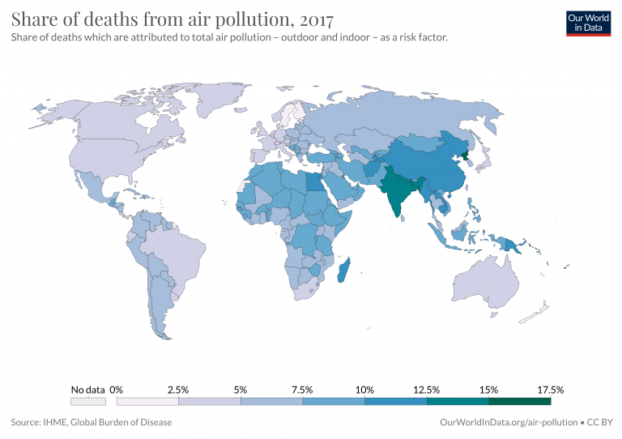

Air pollution is one of the leading risk factors for death. But its impacts go even further, also being one of the main contributors to global disease burden. Global disease burden takes into account not only years of life lost to early death, but also the number of years lived in poor health.
In the visualization we see risk factors ranked in order of DALYs – disability-adjusted life years – the metric used to assess disease burden. Again, air pollution is near the top of the list making it one of the leading risk factors for poor health across the world. Air pollution not only takes years from peoples’ lives, but also had large effect on quality while they’re still living.
How are death rates from air pollution changing?
In the visualization we show global death rates from air pollution over time – shown as the total air pollution, in addition to the individual contributions from outdoor and indoor pollution.
 To go places and do things that have never been done before – that’s what living is all about.Globally we see that in recent decades the death rates from total air pollution has declined: since 1990 the number of deaths per 100,000 people have nearly halved. But, as we see from the breakdown, this decline has been primarily driven by improvements in indoor air pollution.
Death rates from indoor air pollution have seen an impressive decline, whilst improvements in outdoor pollution have been much more modest.